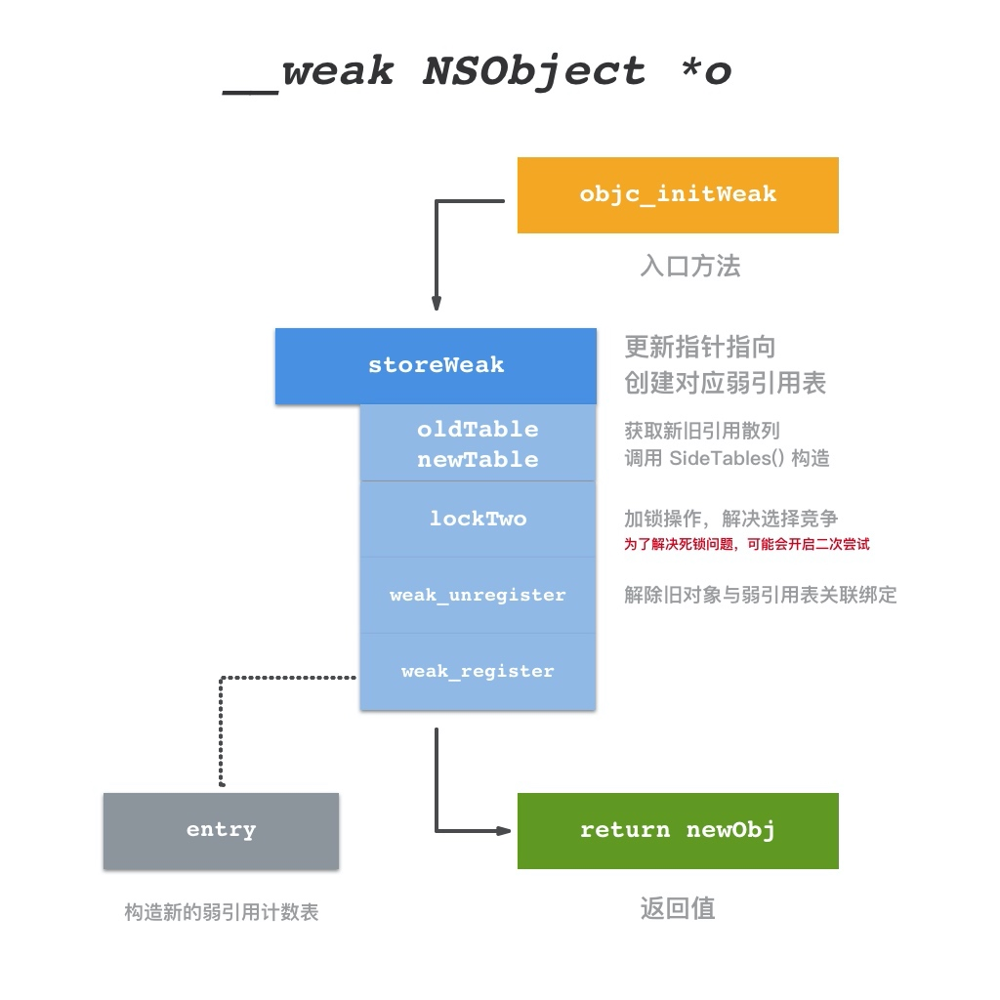
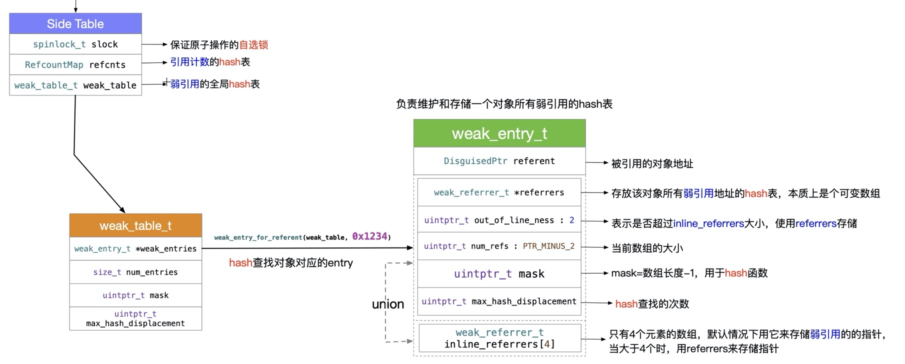
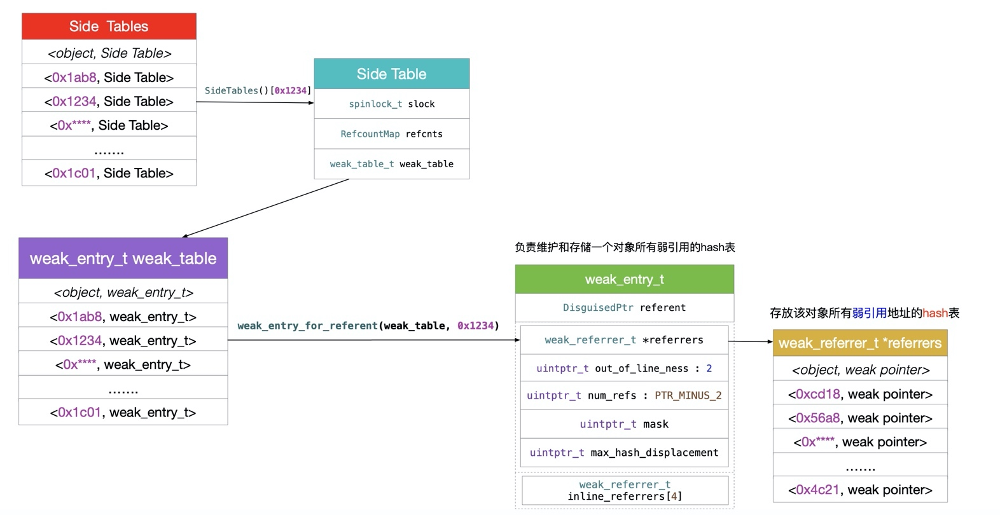

weak
实现
作者在文中提供了一个简单版的 weak 实现：
// { 对象地址 : [ 对象指针地址1、 对象指针地址1] }
static NSMutableDictionary *weakTable;
@interface A : NSObject
@end
@implementation A
- (void)dealloc {
// 获取指向此对象的所有指针变量地址
for (NSNumber *ptrPtrNumber in weakTable[@((uintptr_t)self)]) {
// 根据指针变量地址，将指针变量置为 nil
// 这里就是 w1 置 nil
uintptr_t **ptrPtr = (uintptr_t **)[ptrPtrNumber unsignedLongValue];
*ptrPtr = nil;
}
// 移除和此对象相关的数据
[weakTable removeObjectForKey:@((uintptr_t)self)];
}
@end
int main(int argc, const char * argv[]) {
@autoreleasepool {
weakTable = @{}.mutableCopy;
__unsafe_unretained NSObject *w1;
@autoreleasepool {
NSObject *obj = [A new];
uintptr_t objAddr = (uintptr_t)obj;
w1 = obj;
// 将对象地址和需要自动置 nil 的指针变量的地址保存至 map 中
// 使用可变数组方便处理多个需要置 nil 的变量指向 obj
weakTable[@(objAddr)] = @[@((uintptr_t)&w1)].mutableCopy;
// 即将走出 w1 所在作用域，将 w1 的地址从 map 中清除
[weakTable[@((uintptr_t)w1)] removeObject:@((uintptr_t)&w1)];
}
NSLog(@"%@", w1);
}
return 0;
}
系统的 weak 实现总结如下：
设置
__weak修饰的变量时， runtime 会生成对应的entry结构放入weak hash table中，以赋值对象地址生成的hash值为key，以包装__weak修饰的指针变量地址的entry为value，当赋值对象释放时， runtime 会在目标对象的dealloc处理过程中，以对象地址（self）为key去weak hash table查找entry，置空entry指向的的所有对象指针。 实际上entry使用数组保存指针变量地址，当地址数量不大于 4 时，这个数组就是个普通的内置数组，在地址数量大于 4 时，这个数组就会扩充成一个hash table。 系统会提供一个SideTable来关联对象引用和弱引用表，对于一个对象来说这个结构实例是唯一的。一般来说，objc 2.0 的对象引用计数都会优先保存在isa的extra_rc位段中，只有超出了存储的限制才会将超出部分保存到对应的SideTable中，isa使用has_sidetable_rc标记是否超出限制。 系统的实现需要针对TaggedPointer进行特殊处理。weak_entry_t使用union来进行记录，在wea指针数量小于 4 个时可以快速访问。
文章不算很长，但是把创建和销毁流程讲得非常清晰。主要重点在 weak_entry_t 的处理， hash 的计算。
weak 弱引用的实现方式
整体流程说得比较清晰，代码注释和解释也比较详细

引用计数与 weak


应用
weak singleton ，当所有持有单例的对象都释放后，单例也会被释放掉，减少内存浪费：
- (void)setContext:(CDDContext*)object {
id __weak weakObject = object;
id (^block)() = ^{ return weakObject; };
objc_setAssociatedObject(self, @selector(context), block, OBJC_ASSOCIATION_COPY);
}
- (CDDContext*)context {
id (^block)() = objc_getAssociatedObject(self, @selector(context));
id curContext = (block ? block() : nil);
return curContext;
}
weak associated object ，associated object 本身并不支持添加具备 weak 特性的 property ，但我们可以通过一个小技巧来完成：
- (void)setContext:(CDDContext*)object {
id __weak weakObject = object;
id (^block)() = ^{ return weakObject; };
objc_setAssociatedObject(self, @selector(context), block, OBJC_ASSOCIATION_COPY);
}
- (CDDContext*)context {
id (^block)() = objc_getAssociatedObject(self, @selector(context));
id curContext = (block ? block() : nil);
return curContext;
}
文章最后一段话写得很好：
编程语言一直处于进化当中，语言的设计者会站在宏观的角度，结合行业的需要，添加更多的方便特性，如果只是记住官方文档里的几个应用场景，而不去思考背后的设计思路，则很难写出有想象力的代码。
简易版实现
weak 的简易版实现。借用 block 和 unsafe_unretained 实现 weak ，在对象 dealloc 时调用 block ，而 block 会将 unsafe_unretained 指针指向 nil 。